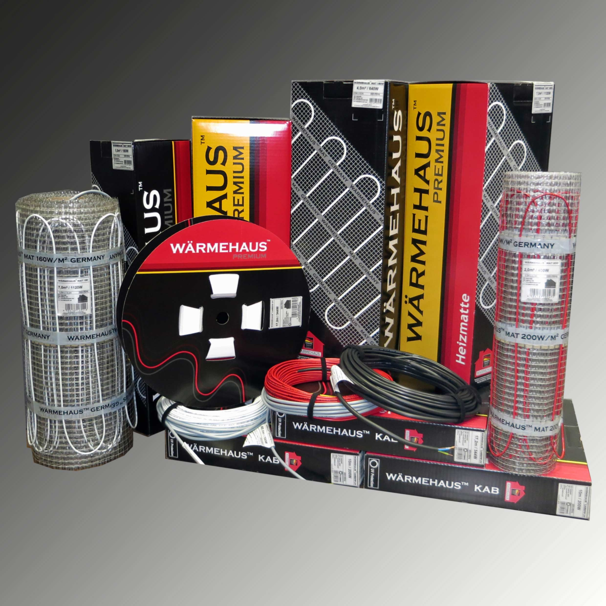

1. Для начла необходимо проверить бетонное основание в помещении на деффекты и неровности (бугры, ямы, трещины и сейсмошвы). Самый правильный вариант для выявления бугров и ям - использовать лазерный уровень.
В случае, если бетонное основание неровное - необходимо выровнять его сделав '0' по плоскости.

2. Далее определяем для себя, какое конечное покрытие будет использоваться в помещении, для которого предназначается система теплый пол:
2.1 Если планируется, что для конечного покрытия будет использоваться плитка или керамогранит, обязательно прогрунтуйте бетонное основание перед укладкой теплого пола.
Под плитку или керамические изделия используются кабельные системы тёплого пола, такие как Маты или Кабель на крепёж на ленте.
2.2 Если же конечное покрытие будет ламинат, паркетная доска, линолеум либо ковролин, то грунтовать бетонные основания не обязательно, но желательно.
В этом случае лучше всего вам подойдёт пленочный инфракрасный пол

А теперь более детально рассмотрим системы теплого пола Wärmehaus:
Подходят как для керамической плитки так и для керамогранита.
Система Тёплого Пола Мат мощностью 160 Вт на м/кв позволяет быстро и без лишних затрат в электричестве разогреть теплый пол и создать комфортную температуру.
Система теплого пола Мат мощностью 200 Вт на м/кв хорошо подойдет для ванных комнат, санузлов и балконных групп, т.к эти помещения не имеют основного отопления.
ВАЖНО! Систему теплого пола Мат нельзя укладывать под ламинат, т.к это может привести к деформации конечного покрытия.
С чего же начать укладку системы тёплого пола Мат:
1. Определить место, где будет расположена стационарная мебель и отступить от нее 5 - 10 см. Далее от стен, возле которых мебель не планируется либо будет располагаться мебель такого плана как стул стол тумбочка на ножках, отступаем 15 см.
Площадь, которая у нас осталась и является той площадью, которую нам нужно покрывать "теплым полом"


2. Когда мы нашли квадратуру, которая необходима для укладки, далее нужно определиться, где будет расположен регулятор тёплого пола. (Рекомендуемая высота установки регулятора - 90 см для удобства его включения-выключения и программирования).

3. Выштрабливаем отверстие в стене для установки монтажной коробки.

После этого делаем штробу в стене и в полу шириной 2 см и глубиной 1.5 - 2 см - для установки гофратрубки, в которой будет размещён датчик тёплого пола.

4. Устанавливаем гофратрубку в штробу и выводим в неё датчик тёплого пола. Также в эту штробу мы устанавливаем силовой кабель от тёплого пола.

ВАЖНО! Нагревательный элемент переходящей муфты силового кабеля установить в полу. Не рекомендуем устанавливать муфту в стене - это может привести к выходу ее из строя.

5. Теперь устанавливаем систему тёплого пола Мат с учетом отступов от стен и мебели.